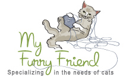

|  | |||||||
|
Hello. My name is Nancy Duncan. I started My Furry Friend as a pet sitting service in 1997. I believed
then as I do now that the best job in the world is spending time with cats. I have had my own furry
friends for most of my adult life and have come to understand their unique ways of interacting with
each other and those in their environment. I have shared in the playfulness of their early years and
cared for them when they became ill in their later years. I bring the value of this experience to every
cat placed in my care and I fully understand the importance of knowing one’s pet is in trusted,
knowledgeable and loving hands. Prior to starting My Furry Friend, I spent many years as a volunteer with the San Francisco SPCA.
I began as a cat adoption counselor helping to find homes for the homeless and then moved on to
become a shelter behaviorist. This entailed socializing the more aggressive and withdrawn cats to
facilitate their adoptions. During this time I completed my graduate degree in psychology and
counseling at the University of San Francisco. My education and interest in cat behavior led me to
become a member of the nationally recognized team of SPCA Cat Behaviorists, providing telephone
consultations and counseling for pet owners throughout the United States whose cats were
experiencing a wide range of behavior problems. My background and training allow me to bring a
unique set of skills to my business and my work as a Cat Behaviorist. As a licensed psychotherapist,
I evaluate and address the problems exhibited by cats not only from the feline perspective but also
in relation to their home environment and their relationship with all family members. My Furry Friend is owner operated, a member of the National Association of Professional Pet Sitters, and fully licensed, bonded and insured. Training to administer pet first aid and CPR has been completed. All services are personalized to meet the needs of both pets and owners. Pet sitting is provided throughout most of San Francisco. Although we specialize in cats, we are happy to care for other small animals such as birds, fish and bunnies. Behavioral Consultations are conducted via an in home visit throughout much of the Bay Area or via telephone. References provided upon request. |
||||||
| Home Services Behavioral Consultations About Contact Us Links | |||||||